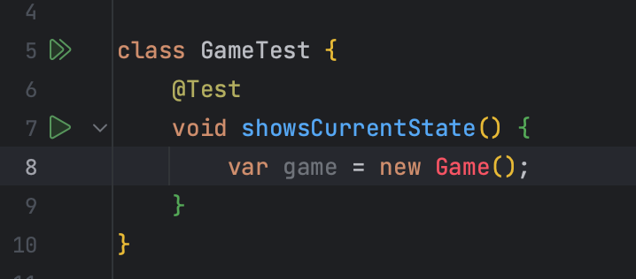
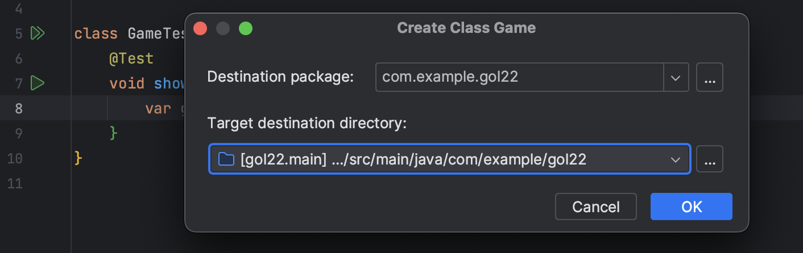
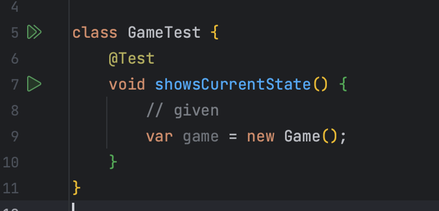
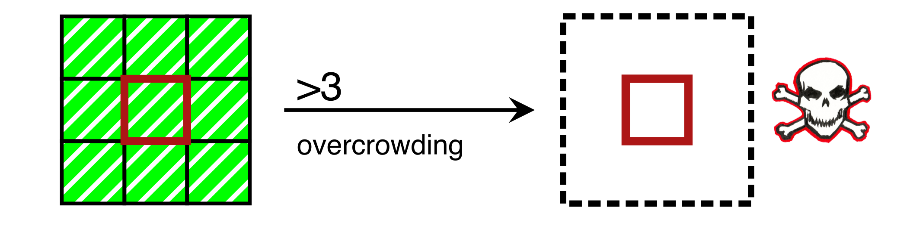
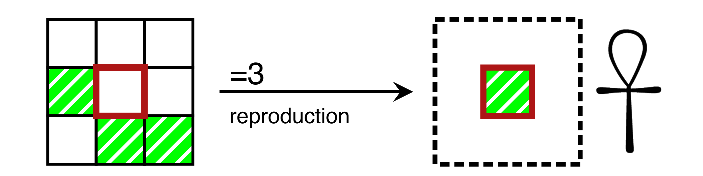
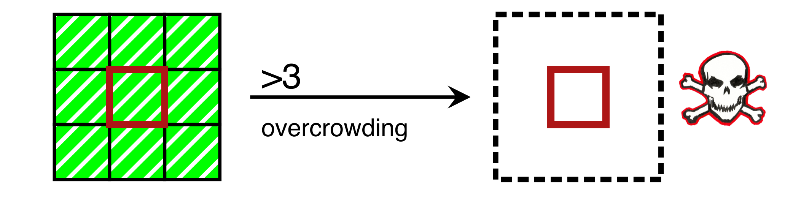
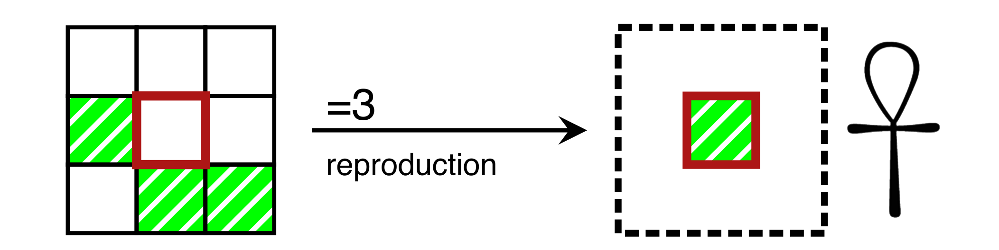
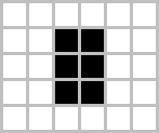
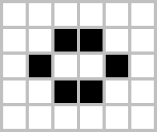

Global Day of Coderetreat
demo
Introduction
- Who am I? What project I work on in Paramount?
- How much do I use TDD and Pair-Programming?
- What is my shoe size?
Coderetreats are free day-long, intensive practice events, focusing on the fundamentals of software development and design. By providing developers the opportunity to take part in focused practice, away from the pressures of "getting things done", the coderetreat format has proven itself to be a highly effective means of learning and nurturing software development skills. coderetreat.org
Coderetreat is a full-day event for practicing software development. Away from the pressures of ‘getting things done’, developers focus on and develop specific aspects of how they build code to explore good software development techniques. Developers work together to build code and share their experiences. Coderetreat uses a software problem with just enough complexity to create rich learning without overburdening the developers. By repeatedly building an implementation, adding additional challenges, and changing work partners frequently, Coderetreat is a framework for continuous learning how to build software better. coderetreat.org/the-workshop
Coderetreats are free day-long, intensive practice events, focusing on the fundamentals of software development and design. By providing developers the opportunity to take part in focused practice, , the coderetreat format has proven itself to be a highly effective means of learning and nurturing software development skills. coderetreat.org
Coderetreat is a full-day event for practicing software development. Away from the pressures of ‘getting things done’, developers focus on and develop specific aspects of how they build code to explore good software development techniques. Developers work together to . Coderetreat uses a . By frequently, Coderetreat is a framework for continuous learning how to build software better. coderetreat.org/the-workshop
🛣️ > 🎯
Pair-Programming
-
Recommendation: Ping-Pong
- Too boring? Try Ball-Board or Mute Ping-Pong (ref)
-
Lazy Coder - write the least to make test pass
- If both advanced - consider Evil Coder
- Talk and consult with each other
The Three Laws of TDD
- You are not allowed to write any production code unless it is to make a failing unit test pass.
- You are not allowed to write any more of a unit test than is sufficient to fail; and compilation failures are failures.
- You are not allowed to write any more production code than is sufficient to pass the one failing unit test.




 



Patterns
 


Session 1
Give it a try
Session 1
retro
- Have you deleted your code already?
- Delete if not
- How does it feel?
- What would you change in the next iteration?
- Thoughts?
Session 2
No mouse time!
Session 2
retro
- What keyboard shortcuts you learnt and would use?
- What to change what to further add?
- Thoughts?
Session 3
Your secondary language
Session 3
retro
- Did it become easier?
- Would you use this language in the last iteration?
- Thoughts?
Session 4
5-min deadlines
refThe Closing Circle
- What did you learn today?
- What surprised you today?
- What will you apply starting Monday?
+Feedback for facilitator :)